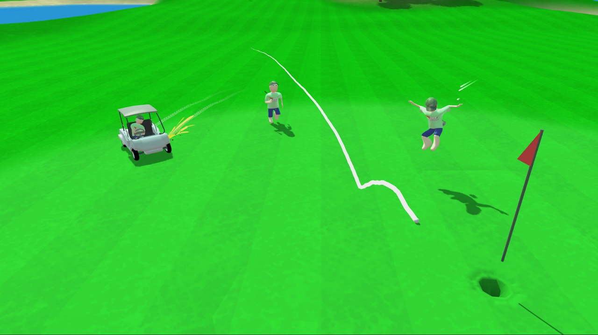

Overview
Me and a friend had already made multiple smaller games together in game jams,
However we wanted to build something bigger.
That's where we got the idea for a multiplayer golf game where your goal isn't to get the
least strokes but to get to the hole as fast as possible.
We were planning on releasing this on steam, however because of studies we did not
have enough time to polish and make it release ready.
